Умней
Внутренняя система сети учебных центров: приём абитуриентов, заявки на обучение, учебные планы, приказы и переписка между центрами и головным офисом.
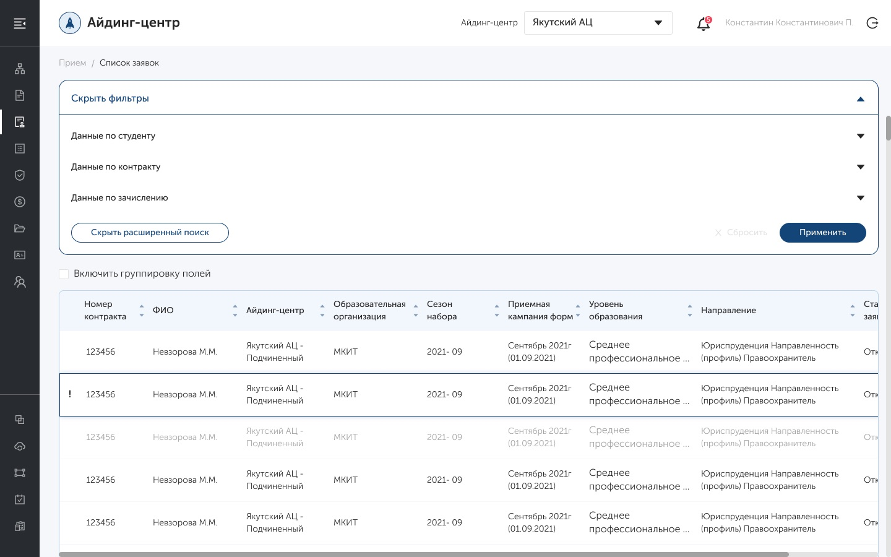
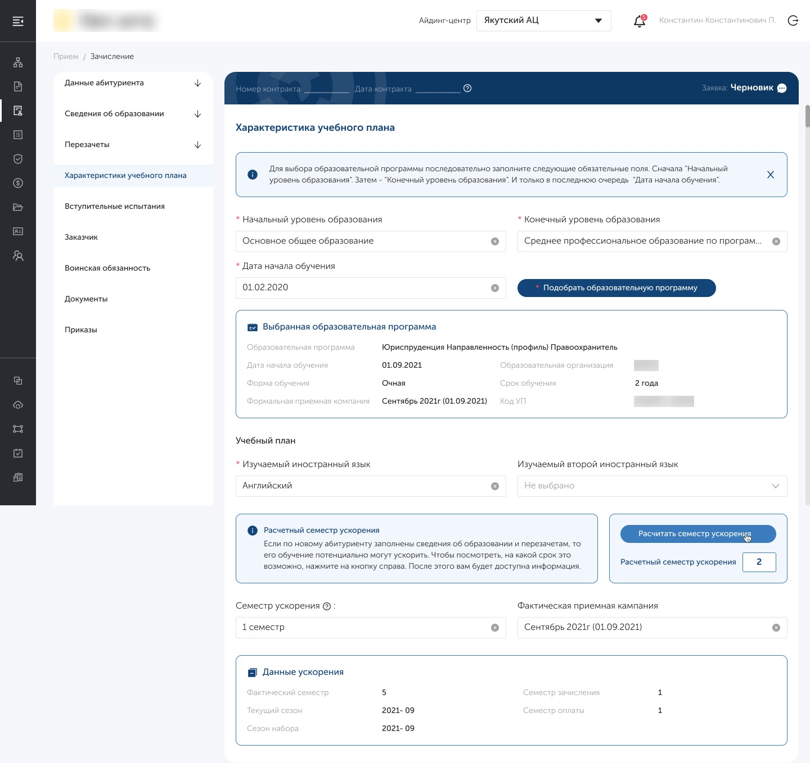
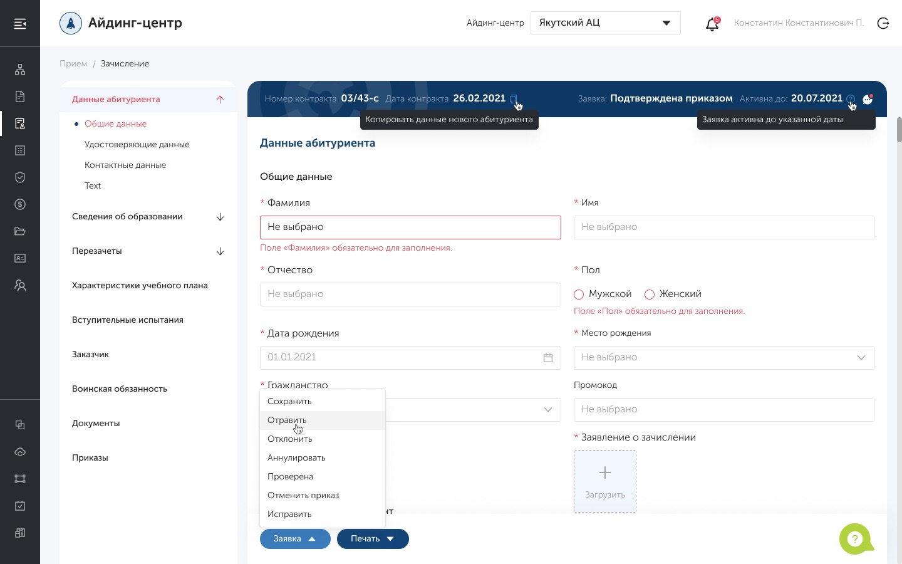
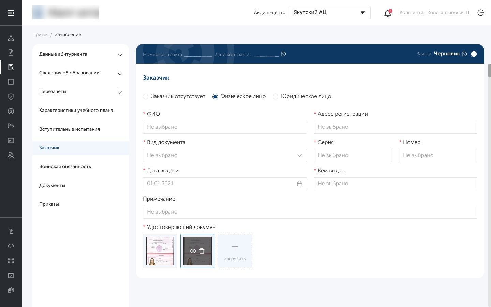
Задача:
Умней — сеть учебных центров с филиалами по всей стране. Всё, что связано с учениками, проходит через внутреннюю систему Workspace: приём, зачисление, учебные планы, оплата, приказы, выпуск. В 2021 году систему решили перепроектировать, начав с самого нагруженного процесса — приёма и зачисления абитуриента.
Что было сложного:
- Около 85 разделов, накопленных за годы работы системы;
- Три роли с разными правами: образовательные организации, айдинг-центры в регионах и головной офис;
- Анкета зачисления на девять блоков, где поля зависят друг от друга и от роли пользователя.
Роль:
Арт-директор. Карта сервиса, прототипы, дизайн интерфейса, дизайн-система и сопровождение вёрстки.
Этап #1
Карта сервиса: сначала собрать всю систему на одном листе
Прежде чем рисовать экраны, я разложил все разделы Workspace в одну карту: 13 групп верхнего уровня и около 85 разделов внутри — от «Приёма» и «Обучения» до финансов, выпуска и справочников. Карта стала общей точкой опоры для команды и клиента: по ней договаривались о навигации, группировке меню и очерёдности работ.
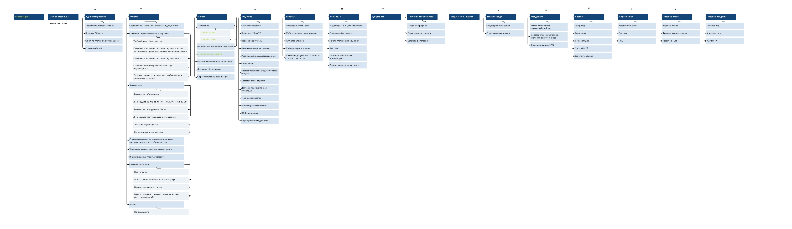
Меню в системе разное для каждой роли, поэтому на карте отмечено, какие разделы кому доступны. Отсюда же выросла структура бокового меню: две группы иконок, раскрытое и свёрнутое состояние, вложенные уровни.
- Вся система на одном листе.
- Понятный порядок работ: начали с приёма и зачисления.
Этап #2
Три роли в одной системе: каждый видит свою часть процесса
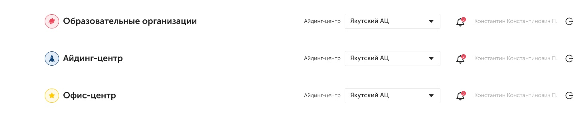
Айдинг-центр в регионе заводит заявку на абитуриента, головной офис её проверяет и подтверждает приказом. Роль видна сразу в шапке: своя иконка и цвет. Пользователь с доступом к нескольким центрам переключает их в том же месте.
Права учтены на уровне полей. Например, у айдинг-центра нет выбора семестра ускорения и фактической приёмной кампании: эти значения появляются только после того, как их проставит офис.
Путь заявки
- Черновик
- Отправлена
- Отклонена
- Исправлена
- Проверена
- Подтверждена приказом
Каждая смена статуса попадает в чат заявки, где центр и офис переписываются и обмениваются файлами, не уходя в почту.
Этап #3
Зачисление: анкета из девяти блоков, которая подсказывает порядок заполнения
Заявка на зачисление — самый длинный документ в системе: данные абитуриента, образование, перезачёты, учебный план, вступительные испытания, заказчик, воинская обязанность, документы и приказы. Чтобы в нём не потеряться:
- Слева — навигация по блокам с вложенными пунктами, блок с ошибкой подсвечивается.
- Сверху закреплена плашка с номером и датой контракта, статусом заявки и сроком её актуальности.
- Где поля зависят друг от друга, интерфейс говорит, в каком порядке их заполнять, и сам подбирает образовательную программу.
- Семестр ускорения считается по кнопке на основе сведений об образовании и перезачётов.
- Один шаблон анкеты для трёх сценариев: зачисление, зачисление на курс ДПО и восстановление после отчисления.
- Около 140 экранов и состояний в рабочем файле.
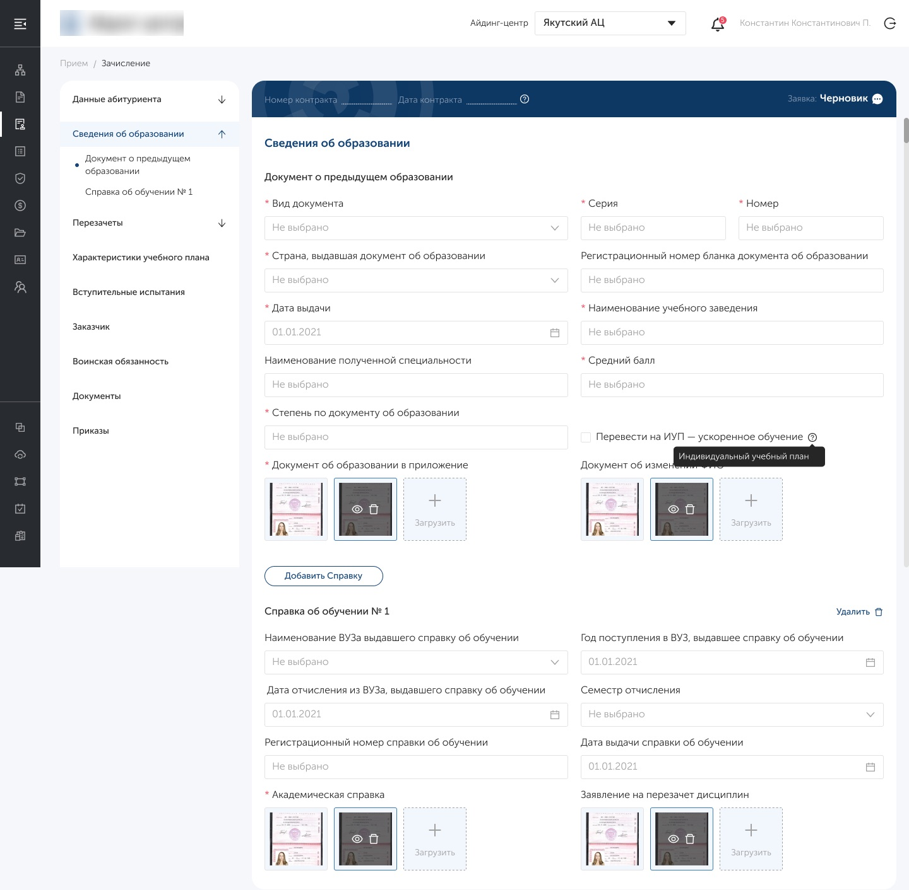
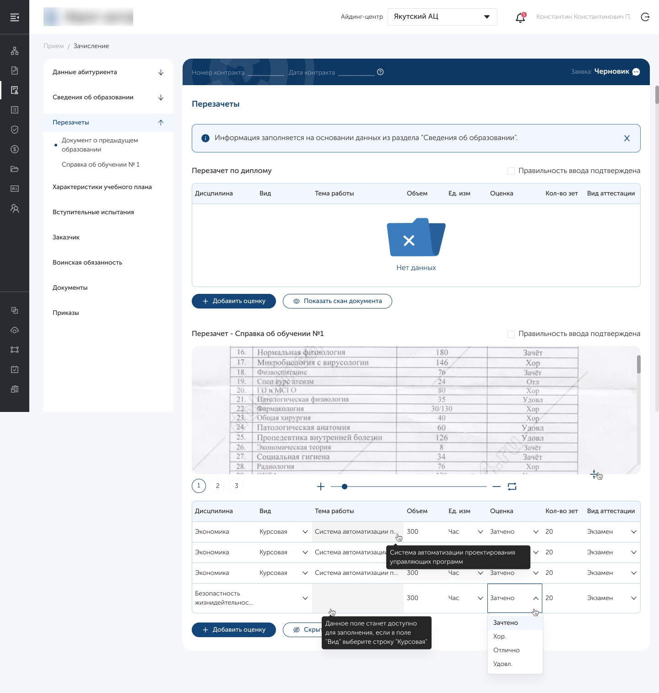
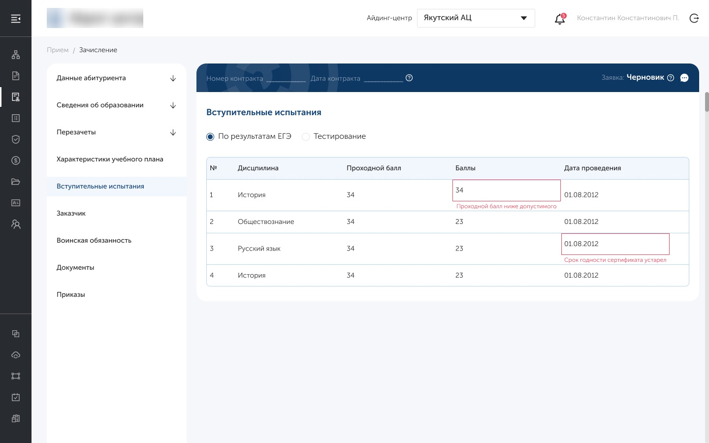
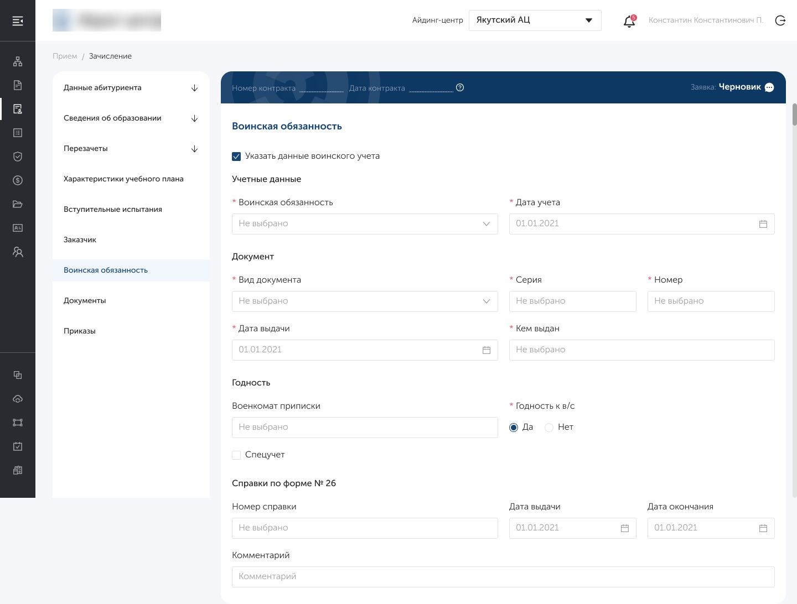
Этап #4
Ошибки и краевые случаи: продумать то, что обычно всплывает уже в разработке
На каждый сценарий я разрисовывал не только основной путь, но и то, что может пойти не так:
- Ошибки под полями и подсветка блока в навигации.
- Система находит дубль и предлагает продолжить ранее созданную заявку вместо новой.
- Проверка правильности СНИЛС, подтверждение удаления файла, экран ошибки.
- Номер контракта появляется не сразу: пока его нет, рядом знак вопроса с пояснением, после — кнопка «Копировать».
- Система не даёт завести дубль заявки.
- Разработчики получили готовые состояния, а не вопросы «что показать, если…».
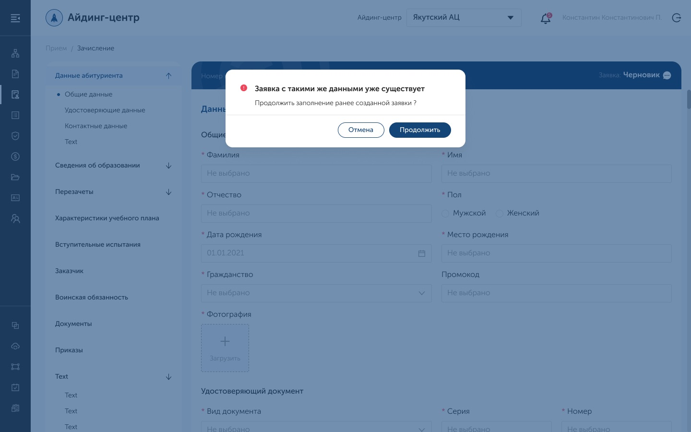
Этап #5
Список заявок: фильтры, которые не мешают таблице
Сотрудники центров ищут заявки по десяткам признаков. Для фильтров я сделал три варианта. В работу ушёл такой:
- Фильтры скрыты по умолчанию, расширенный поиск сгруппирован: данные по студенту, по контракту, по зачислению.
- Если фильтры свёрнуты, но какой-то из них выбран, это видно и в свёрнутом виде.
- Строки можно сгруппировать по любому полю.
- Колонки переставлены: ФИО сразу за номером контракта, статус и дата актуальности в конце строки.
- Истёкшая дата актуальности выделяется цветом.
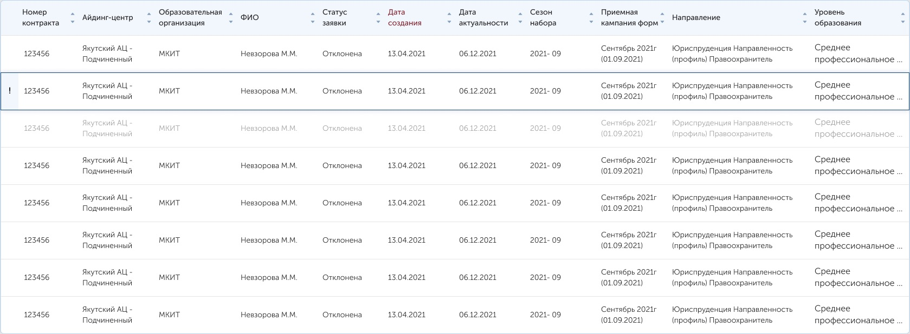
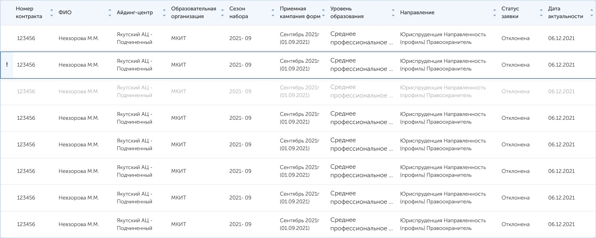
Этап #6
Дизайн-система и сопровождение вёрстки
Все экраны собраны из общей библиотеки компонентов. У каждого компонента описаны состояния: обычное, наведение, нажатие, загрузка, ошибка, недоступно. Прямо в библиотеке оставлены комментарии для вёрстки: например, поле выбора центра растягивается под длину названия, а чат прокручивается так, чтобы до поля ввода всегда оставалось 15 px.
- 17 разделов компонентов: от кнопок и полей до таблиц, чата и навигации.
- Около 60 иконок в одном стиле.
- Цветовая палитра под три роли и статусы.
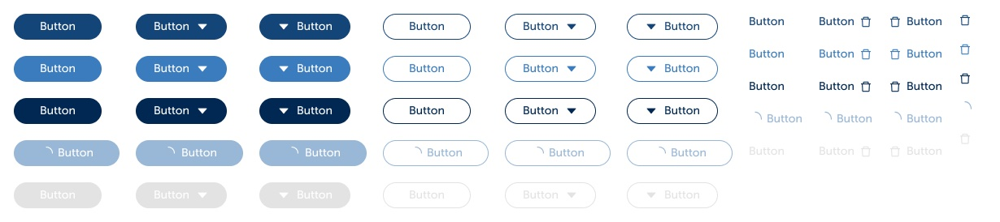
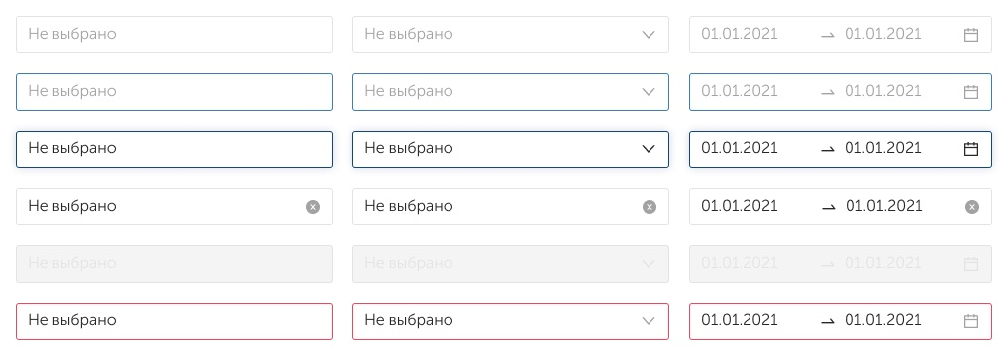
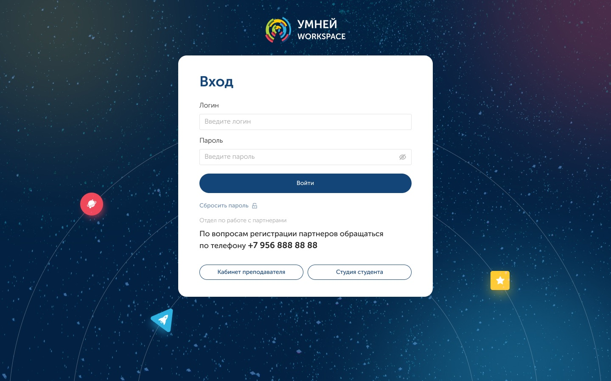

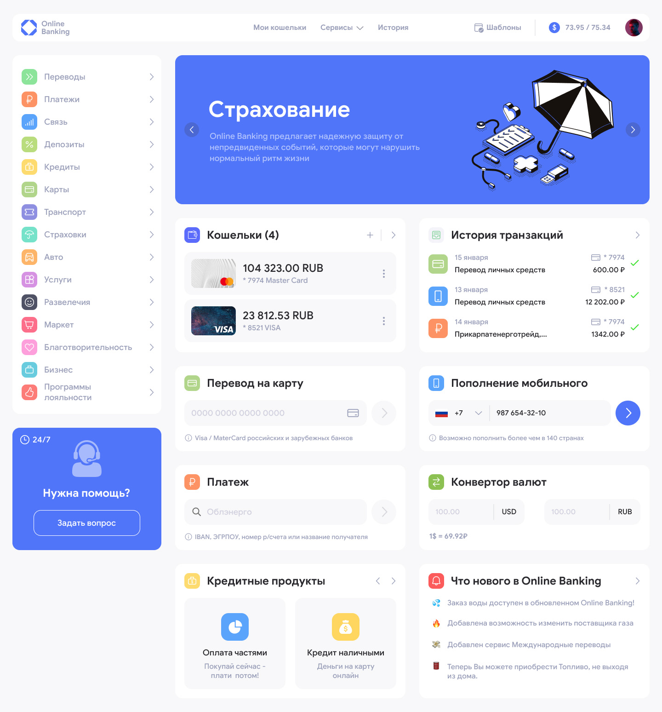